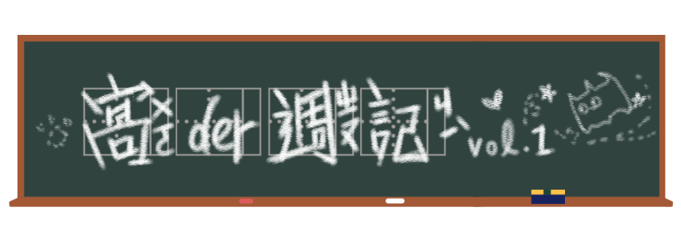

2019開春大吉，meme界經歷慘淡的2018年尾後，在1月中後迎來3個特別的meme。
world_record_egg
最不可思議的事情總是在出乎意料的地方發生。今年初我們在IG上，就已經看到了奇蹟。
你知道IG上最多讚的照片是哪張嗎？這個寶座原本是由美國名媛、擁有1億2400萬追蹤的社群女王Kylie Jenner知名的卡戴珊家族的一員，是金．卡戴珊同母異父的妹妹，父親是已變性的Caitlyn Jenner，母親是 Kris Jenner。出演過真人秀《與卡戴珊一家同行》，2018年靠著自創化妝品品牌Kylie Cosmetics成為億萬富翁，登上《富比士》封面，年僅21歲。所佔據，是2018年2月7號所po的曬娃照一枚，有1800多萬讚。但是2019年1月14日，這個頭銜正式被一顆蛋給奪走了。
是的，你沒看錯，不是你沒睡飽，一顆蛋，毫無反應，就是一顆蛋。
起源
1月4日時，這個頭貼是蛋，唯一的貼文也是蛋的帳號@world_record_egg就這麼出現了，它的自我介紹稱呼自己為EGG GANG。那篇眾所矚目的貼文寫道：
「我們來打破世界紀錄吧！一起成為IG上最多讚的貼文！打敗Kylie Jenner的紀錄（1800萬）！我們可以的！」
散佈
這顆蛋在短短十天內得到超過1900萬個讚，現在已經逼近五千萬，帳號還有藍勾勾認證，和770萬個追蹤。雖然貼文一直都只有一則，但它的限時動態可是熱鬧得不得了，除了許多蛋相當優質的合成圖和影片以外，從1月16日開始，還與藝術家開始賣起了看起來很不錯的潮T，而且24小時限時搶購、並表示會將10％收入捐給國際精神疾病慈善組織NAMI在IG上的帳號是@namicommunicate。。（潮T已經出到第二款ㄌ）
名人加持
在這股雞蛋狂熱中，不只被點名的Kylie Jenner po文在柏油路上打蛋反擊，艾倫秀主持人Ellen也po了一張有Kylie Jenner臉的蛋的照片，寫道：「根據我的計算，這會是IG上最多讚的貼文，因為蛋+Kylie Jenner=至少5100萬讚。」
world_record_egg當然也不甘示弱，偷偷讓Kylie Jenner的老公Travis Scott穿上潮T，這是真的還是P的ㄋ？）蛋蛋的限時動態也時常轉貼眾人的響應貼文，有名人、有一般民眾、有組織的官方帳號。（當然中間要混雜著大量的潮T資訊。）
孵化徵兆？
就在昨天（1月19日），world_record_egg的貼文竟然又增加了一則！乍看是同一張蛋的照片，但仔細一看，上頭竟然出現了裂痕，難不成有什麼東西要孵化了嗎？這到底是怎麼一回事？這個帳號的幕後操盤手是誰？大家都還在不停地猜。但是在許多名人的加持和口耳相傳下，這無疑是一場空前絕後的IG病毒行銷。（也出現許多想被關注的假帳號呢，口憐。）
#TenYearChallenge
在這個禮拜之間，全球掀起了一股巨型懷舊相片風潮，看起來就像狂熱加強版的不限時#TBTThrowback Thursday的縮寫，很多社群媒體上，有在星期四放舊照片的習慣。有說法是說，因為星期四是一個禮拜當中最忙的時候，通常沒時間拍照，所以會先拿舊照片充版面。現在即使不是星期四，也有人會使用這個tag，甚至有人跟著發明了#FBF（Flashback Friday）。，但不同的是，這次使用的hashtag是#TenYearChallenge或#10YearChallenge，且同樣在各大社交平台FB、IG、Twitter都掀起相當的熱潮。
起源
關於#TenYearChallenge十年挑戰源頭的說法眾說紛紜，有媒體說來自於FB的「動態回顧（回憶）」功能，十年前2009年也正好是許多人剛加入社群媒體的時候。也有媒體報導，#TenYearChallenge其實與另一個挑戰「How Hard Did Aging Hit You」相同，字面上的意思，就是要看「『衰老』究竟影響了你多少」？
1月11日時，來自奧克拉荷馬州KOCO-5電視台的氣象記者Damon Lane，發起這個有趣的挑戰。挑戰者必須貼出社交網站上第一張大頭照和現時的大頭照對比，內容主要鼓勵大家檢視過往年華、擁抱現在改變過後的自己。有部分挑戰者認為「Aging」太過負面，於是有簡化的#2009 vs. 2019、#GlowUp challenge出現，也才有了大家看到的＃10YearChallenge。
散佈
#10YearChallenge的意思很簡單，實際上也相當模稜兩可，你可以把它解釋成「挑戰10年不變」或是「挑戰十年大改變」，端看po文者想表示的是哪一種。既然名為Challenge，當然就是要向大眾呈現「好」的成果。也因此大部分的人po文，十之八九都是在炫耀，從以前到現在都沒有什麼變化（可以驗證偶像明星們的時間旅行能力），或是身材變好、樣子變得更好看。（或其實只是符合現代審美觀？感謝十年挑戰帶眾人回顧2009年的時尚流行。）
迷因界的大小朋友自然也跟上這股大眾流行，且題材更加多元、跳脫真人照片的範疇，尤其諷刺「毫無改變」的照片更是層出不窮。在此之中，也出現要社會關心環境議題的聲音，在一片正向的言論中可說是相當切中人心。
數據陰謀論
待周遭的人都差不多參與了一輪後，科技評論家Kate O'Neill也用同樣的前後十年格式po文她認為這些照片數據有可能會被蒐集，用來訓練AI的臉部識別演算法，大量的照片數據可以幫助AI判斷年齡增長並判斷歲數。原文→，指出自己懷疑這可能是FB為了訓練AI人工智慧而收集照片數據的舉動。
但Facebook否認這個挑戰與他們有關。官方聲明指出：
「這是一個用戶自主發起、自行流行起來的迷因。Facebook並沒有發起這股潮流，活動所用的都是以前就在Facebook上的照片。Facebook並無從這項活動中獲益（除了提醒我們2009令人困惑的時尚以外）。小提醒：FB用戶隨時可以開關相片的臉部辨識功能。」
所以蒐集數據的陰謀論是否為真？就留待正在挖舊相片的各位仔細判斷了。
掐佐助
起源
2019年1月13日，網友kirikocult在推特上po了兩張照片，一張是火影忍者主角之一的宇智波佐助，另一張則是伸手的橘貓。兩者在推特的縮圖排版上，恰好無接縫的吻合，看起來就像貓貓在掐著佐助。
散佈
於是乎，這波掐佐助風潮就開始了，只要有被掐脖的佐助和任何一個伸著手(?)的人事物，都可以，有完美的錯視效果，毫無違和感。因為在FB上的縮圖效果也合用，很快地就傳到其他平台上，最後很多人選擇p圖直接剪貼。（有趣的是，原po的截圖跟原動畫是左右相反的，有些人在製作迷因時沒有注意到左右手的差異，被批評不夠用心）
來自火影忍者的少年
至於佐助為什麼會被掐著呢？推主kirikocult在推文中寫道：「你很弱。為什麼這麼弱？因為你的憎恨還不夠深。」這是佐助成長為眾所皆知的中二少年之前（其實這個階段好像已經是了），他的哥哥宇智波鼬對他所說的一段話。
沒錯，掐著佐助的就是他的親哥哥。
來自動畫第85集的這一幕可說是火影忍者的經典場景之一，是牽引火影忍者劇情走向的一段重要情節。不熟悉火影忍者的朋友可能會覺得很困惑，不過宇智波兄弟間錯綜複雜的情感一直是火影忍者的賣點之一。
不過這些細節與掐脖佐助沒有太大關係，有興趣的朋友可以選擇加入火影忍者動漫畫的巨坑，雖然本篇已在2015年以700話完結，但現在還有子女輩繼續接力，可以看一輩子。